Integrated IOT Data for Sustainability Use case
1. Problem Statement
Consumers are surrounded by Internet of Things (IoT) devices that constantly collect and generate valuable data. According to Statista, there were approximately 15.4 billion connected devices worldwide, a figure that is expected to reach 29 billion by 2030. Yet, the financial services sector hasn’t fully capitalized on this wealth of information.
At the same time, the demand for sustainable choices is on the rise. Specifically, in Singapore, a study by Accenture found that 75% of consumers want to behave more sustainably but lack the avenues and options to do so (WWF-Singapore and Accenture, 2021). They are eager to understand how their everyday actions and purchasing actions could impact and align with Singapore’s national sustainability ambitions. A UOB study further validates this trend. The study revealed that 88% of survey respondents believe that banks and financial institutions should offer more sustainable investing solutions while 91% of the respondents would like to be rewarded for supporting eco-friendly and sustainable businesses. These studies show the high demand for insights into the environmental consequences of financial actions and rewards for sustainable behaviours.
Moreover, the adoption of digital financial applications is growing rapidly in Singapore. A report indicated that the usage of digital payments in Singapore is forecasted to continuously grow from 2018 to 2027, highlighting the rising reliance on such digital financial instruments (Statista , 2023). Together with the user count, the transaction value of digital payments in Singapore is expected to increase, signalling the notion of deeper integration of digital payment means in everyday transactions.
Despite these trends, financial platforms have yet to fully integrate IoT data across a range of IoT eco-systems to sense-make and deliver more holistic insights. This oversight not only hampers the delivery of optimal financial decisions and user experience but also overlooks an opportunity to incentivize sustainable behaviours that have the potential to help corporations and nations meet their sustainability goals at a macro level. The prevailing gap between the IoT ecosystem and financial platforms requires customers to navigate multiple separate platforms, each independent to their own IoT ecosystems.
In an age where many of us juggle a mix of smart gadgets and financial apps, it is challenging to see the bigger picture. How does our latest online purchase affect the environment? Or which financial choices can make a green impact? As we are left connecting the dots, financial institutions are overlooking a golden chance. By bridging these gaps, they could not only empower users towards sustainable choices but also unveil revenue generating avenues by catering to this rising wave of eco-aware consumers.
2. Current System
To understand the problem better, existing services provided by Banks, Payment Service Providers and Startups which are related to sustainability tracking are shown in Figure 1 below. The following section details how these groups are contributing to the realm of sustainable finance.
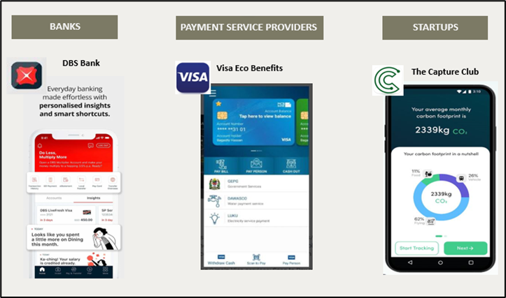
2.1 Banks and Sustainability Tracking
Banks and financial institutions are offering their customers insights on their carbon impact, by classifying their payment transactions and calculating an equivalent carbon footprint measure. For example, the Live Better initiative was launched by DBS in 2021 as part of its digital sustainability initiative.
Within the Live Better application, the Track Better carbon calculator (Fig 2) classifies customer debit and credit card transactions into five main categories namely, food, travel, transport, shopping and energy and utilities. Carbon footprint measures are then calculated by multiplying the dollar value of transactions with an internally developed Economic Emissions Factor (EF) to derive an estimated carbon footprint measure (Fig 3) (DBS, 2023).
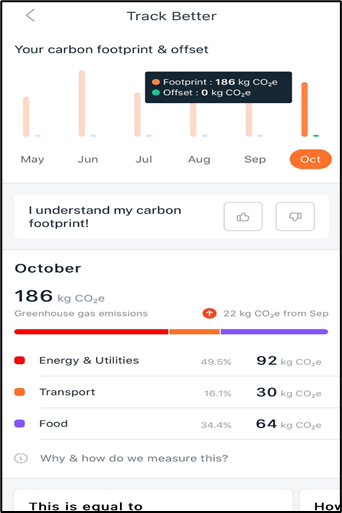
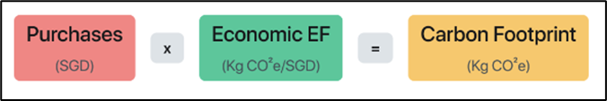
Besides Track Better, other applications like Invest Better, Offset Better and Give Better enable DBS’s customers to invest in ESG linked funds, offset their carbon footprints against carbon credits/projects and donate funds to charities and social enterprises.
2.2 Payment Service Providers and Sustainability Tracking
Visa launched Eco Benefits in 2021, enabling Visa issuing institutions to offer sustainability-focused services to their debit and credit card customers. These services include a carbon footprint calculator, carbon offsets, personalized education and donations to charities and social enterprises (Fig 4). Similarly, payment transactions are classified into groups and multiplied with an ‘Emissions Factor’ to derive an estimated carbon footprint measure (Visa, 2021).
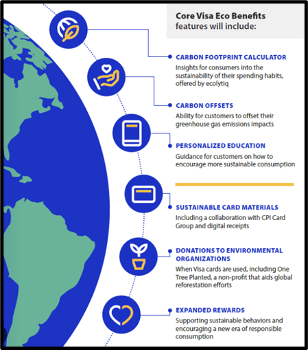
2.3 Startups and Sustainability Tracking
Established in 2019, Startups like “The Capture Club” specialize in offering sustainability solutions by tracking carbon footprints based on users’ transport and food consumption choices. Beyond these core functionalities, the application also educates users about their carbon footprints and suggests green projects to neutralize their environmental impact (Capture, 2023). However, user feedback has been varied. While many appreciate its educational content and offsetting options, concerns have been raised about the application’s accuracy and its tendency towards broad classifications. Additionally, a notable limitation is the inability for users to integrate data directly from their IoT devices and record daily expenses, which would otherwise enhance the accuracy of their carbon footprint tracking.
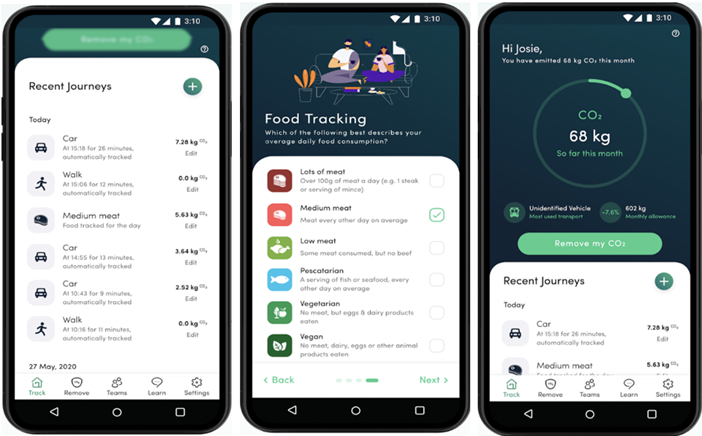
2.4 Identified Market Gaps
According to a consumer sustainability survey by DBS in 2021, 73% of Singaporeans expressed their readiness to adopt a green lifestyle in a fuss-free and intuitive manner, but many have yet to discover the right channels to do so. Furthermore, few were taking meaningful actions to live sustainably as they did not have an easy and effective way to track their carbon footprint across diverse platforms. Although current financial platforms and sustainability initiatives have made commendable strides in providing consumers with insights into their environmental footprint, several gaps remain:
Siloed and Fragmented Ecosystems: Current platforms, primarily rely on their proprietary data streams, focusing mainly on transactions made using their cards. This siloed approach misses out on a broader spectrum of financial activities, rendering a limited and sometimes skewed representation of a user’s carbon footprint. For example, the transactions made by direct bank transfers, mobile wallets, and cash, remain uncaptured, leading to incomplete insights into users’ behaviours and subsequently affecting the user experience due to these unaccounted financial activities.
Absence of Real-time Data Integration: Current platforms lack integration with IoT devices, missing out on the potential to gather real-time data on various activities which could have environmental implications. Consider vehicles fitted with smart sensors. Retrofitting such devices not only provides immediate feedback on driving efficiency but can also influence fuel consumption, and subsequently, carbon emissions. Integrating such data streams across a unified platform can allow for more timely and actionable feedback for users. By receiving real-time emission data from daily activities such as driving, users can make spontaneous decisions to reduce their carbon footprint while at the same time receive financial insights on potential fuel savings based on credit card financial records (E.g., Fuel expenditure at Shell integrated with onboard Car data on fuel uptake).
Incentives for Genuine Carbon Reduction: The current system offers consumers a way to balance out their emissions through carbon offsets. However, this approach may inadvertently promote a superficial approach to sustainability. By allowing individuals to “neutralize” specific activities, these platforms might overshadow the broader picture of our environmental impact. Instead, clear data-driven incentives should be offered to encourage consumers to proactively reduce their actual carbon footprint, rather than simply compensating for it. True environmental responsibility extends beyond offsets and seeks a deeper change in consumption habits.
Behavioural Insights: The existing financial system enables consumers to track their purchasing patterns but lacks fidelity in tracking behavioural patterns. Focusing on just payment transactions can lead to overlooking the broader behavioural patterns of consumers. For instance, even if a user spends money on sustainable products, their overall lifestyle might still be environmentally taxing. This could involve scenarios such as consuming organic coffee but regularly using single-use plastics, or buying eco-friendly clothes but wasting water, which are contradictions that the current systems might not capture comprehensively.
3. Proposed Solution
3.1 Broad Description
The team proposes to launch an integrated IoT Financial and Sustainability platform named “Eco-Link”. “Eco-Link” will leverage the mobile phone as an IoT payment device, and seamlessly connect across a range of IoT eco-systems and financial service providers (see Fig 6 below). Consequently, this enables “Eco-Link” to provide real-time insights into users’ financial choices, recommend sustainability measures, and enable automated payment functionalities. Looking ahead, “Eco-Link” can expand its partnerships and look towards integrating data across an increasing range of IoT devices, including mobile phones, smart cars, and smart home systems and become a holistic tool for consumers to make eco-conscious financial decisions. “Eco-Link” aligns this data with the user’s payment information across different financial entities and gives a real-time analysis of the environmental consequences arising from the user’s financial decisions and consumption patterns.
3.2 Core Features
The subsequent section outlines the primary features of Eco-Link.
Unified Financial Integration Platform: A defining core feature of Eco-Link is its state-of-the-art Unified Financial Integration Platform capabilities. Recognizing the fragmentation and inconsistencies that users often face while navigating different banking apps and payment service providers, Eco-Link leads the way with a transformative solution. Eco-Link seamlessly aggregates and consolidates all financial data, providing users with an unobstructed, comprehensive view of their entire financial landscape. Whether connecting bank accounts, credit cards, insurance, or other financial services, users are offered a holistic snapshot of their financial health, spending behaviours, and transactional histories. This integration is thoughtfully designed, making financial management more streamlined, intuitive, and efficient than ever before.
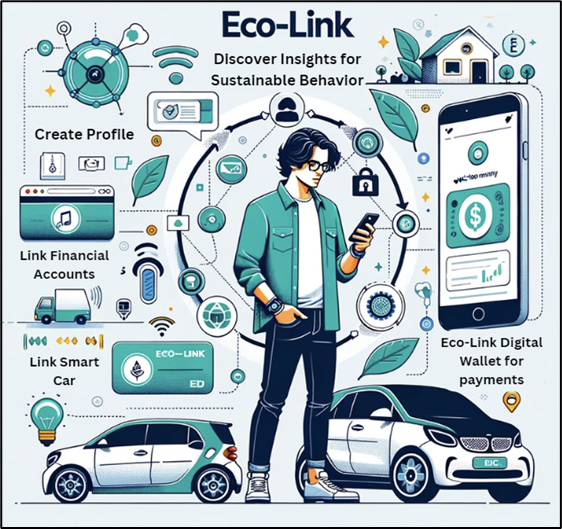
‘Eco Rewards’ for Platform Users: Setting Eco-Link apart from traditional financial platforms is its ‘Eco Rewards’ system. As more users transact and engage with their finances, they are incentivized to make environmentally conscious choices. Whether it’s opting for an eco-friendly vendor, investing in green financial portfolios, or transitioning to paperless bank interactions, each sustainable action accumulates rewards for the consumer. These ‘Eco Rewards’ are not merely points or incentives but represent tangible acknowledgment of the user’s commitment to a greener, more sustainable future. This innovative approach ensures that users are consistently encouraged to embed sustainability into their daily financial decisions, making eco-friendliness a rewarding experience in itself. Figure 7 below presents the app view of how the reward points can be tabulated.
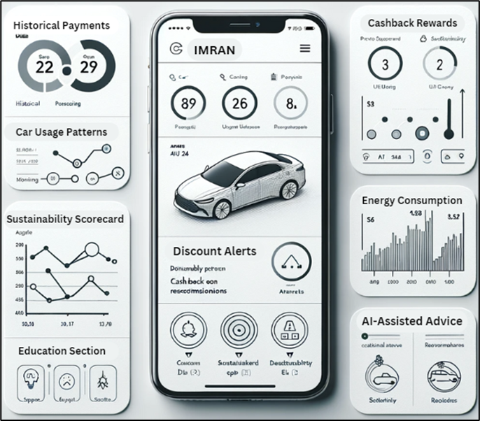
Integrated Sustainability Insights and IoT Integration: Several promising startups have ventured into measuring users’ carbon footprints, yet many of these approaches are rather manual, limiting their full potential. Eco-Link revolutionizes this approach by integrating both IoT devices and financial platforms to offer a more automated, real-time assessment of one’s sustainable actions. At its core, Eco-Link’s platform not only computes a user’s carbon footprint using their payment and collected IoT data. Eco-Link goes a step further to provide dynamic, actionable recommendations based on these insights, empowering users to enhance their sustainability scores and seamlessly transition to an eco-friendlier lifestyle. Additionally, the platform’s advanced IoT Data Visualization capabilities offer users access to live feeds and historical trends from both their payment transactions and connected IoT devices.
Advanced AI-driven Recommendations (Future Enhancement): Building upon our existing foundation, we envision a next-generation feature for Eco-Link that delves deeper by offering personalized AI-driven insights. By further integrating with emerging IoT ecosystems and harnessing an ever-expanding pool of user data, our future AI algorithms aim to provide even more nuanced and context-aware recommendations tailored to each user’s evolving circumstances and preferences. This enhanced feature, currently in our development roadmap, will not only focus on guiding users towards pro eco-choices like energy-efficient appliances or sustainable transportation but will also be able to anticipate future trends, ensuring that Eco-Link users are always at the forefront of both financial prudence and environmental sustainability.
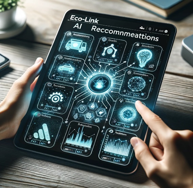
4. Technologies
In this section, we will elaborate on four technologies which serve as enablers for Eco-Link.
4.1 IoT Integration and Financial Data Synthesis
In today’s connected environment, consumers interact with numerous IoT devices that produce a vast amount of data. Much of this data remains untapped within the financial services sector. With the help of IoT Connectivity Platforms such as AWS IoT Core, we will be able to connect IoT data with financial platforms (Hasan, 2022)
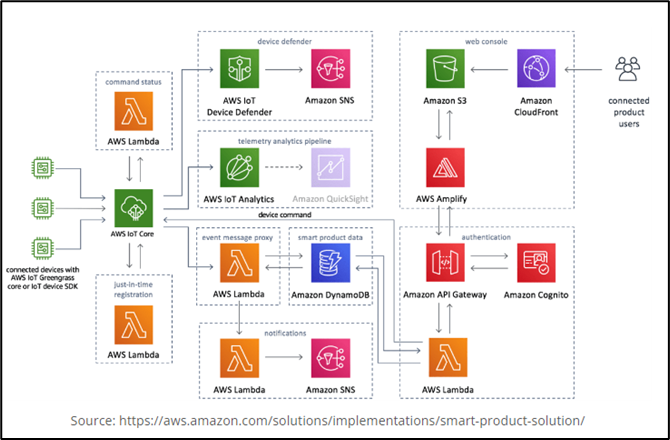
Figure 9 above represents an AWS-based architecture that showcases how IoT connectivity platforms, can integrate IoT data seamlessly with financial platforms.
Integration Process
1. IoT Device Connection:
At the heart of this system lies the AWS IoT Core, which establishes a secure connection between various IoT devices and the cloud. Imagine a spectrum of financial devices, ranging from point-of-sale terminals, ATMs, to even personal wearable tech, requiring real time transmission of financial data . AWS IoT Core makes this interconnectivity possible.
2. Data Processing and Storage:
Once data from these devices reaches the cloud, serverless compute service AWS Lambda can be used to process this information instantly. Every time a user makes a transaction, Lambda can trigger financial analytics or store transactional data.
Amazon DynamoDB serves as the database for storing transactional data, user profiles, and other essential financial datasets. DynamoDB offers quick and reliable data retrieval, ensuring that financial platforms have immediate access to required information.
3. Analytics and Insights:
After processing, the raw IoT data needs to be transformed into meaningful insights. AWS IoT Analytics filters, transforms, and enriches IoT data before storing it, making it ready for analytics and machine learning.
Amazon QuickSight integrates with the processed data to offer visualization tools. Financial analysts can use it to observe market trends, customer spending patterns, and other valuable insights, all derived from the incoming IoT data.
4. Security:
Security is paramount, particularly in the handling of financial data. AWS IoT Device Defender monitors and audits IoT configurations to ensure best practices are followed. Simultaneously, Amazon Cognito manages user authentication, ensuring that only authorized personnel have access to the financial platforms.
5. Data Delivery and User Experience:
Amazon SNS (Simple Notification Service) can be incorporated to provide real-time alerts. For financial platforms, this could mean instant notifications about market changes, transaction confirmations, or trigger of potential fraud warnings.
Financial platforms often need APIs for third-party integrations. Amazon API Gateway creates, publishes, and secures these APIs, allowing mobile banking apps or trading platforms to securely access the data they need.
Lastly, AWS Amplify, combined with Amazon S3 and CloudFront, ensures that web applications related to financial platforms are delivered with low latency, guaranteeing a smooth user experience. Additionally, tools like Tableau and SAS Viya can help process this data, providing valuable insights for decision-making (Tableau, 2023). To store this data securely, solutions like AWS S3, Google Cloud Storage, and databases like PostgreSQL and InfluxDB are used.
Through these technology enablers behind IoT devices, we can improve user experience and pave the way for new applications, such as IoT payments. The combination of these technologies ensures that consumers have easy access to financial decisions and sustainability insights (Cointelegraph, 2021).
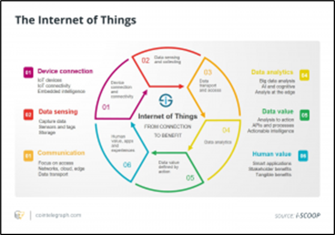
4.2 AI-driven Finance and Secure Transaction Ecosystem
Today’s consumers use smart devices for a multitude of tasks, and financial decisions are no exception. Given this, there is a clear need for precise AI-driven recommendations to assist in financial planning and actions. By utilizing frameworks like TensorFlow, PyTorch, and scikit-learn, we aim to create a straightforward system that offers users actionable financial insights based on their behaviours and preferences (Software, 2023).
This AI-centric approach to finance is supported by the trust and security offered by blockchain technology. Platforms like Ethereum and Binance Smart Chain provide a secure backdrop for transactions. To streamline these transactions, Eco-Link is integrated with popular payment gateways like Stripe, PayPal, and IoT-specific payment systems from Mastercard and Visa. Enhancing this security are protective measures from solutions like Norton IoT Security and TrendMicro.
Below outlines the integration of the IoT payment process:
1. Registration & Association: First, users must register their IoT device on the platform. This connects the device to a specific service provider’s contract, a step that might require setting up specific APIs or other protocols.
2. Real-time Data Transmission: As the IoT device functions, it sends real-time data to the platform. This helps determine if the conditions of any contract are met.
3. Validation & Checking: The platform checks this data against the contract terms to see if conditions have been fulfilled.
4. Payment Initiation: If the data matches contract terms, the platform triggers the payment process, collaborating with the user’s bank or financial institution.
5. Service Provider Notification: After the payment starts, the platform notifies the service provider with details of the transaction.
6. Service Delivery or Continuation: Depending on the notification, the service provider then delivers the service or product or continues a subscription.
Now consider a scenario where an IoT-equipped car monitors its fuel levels and consumption rates. When the fuel reaches a critically low level, or if the AI identifies an upcoming long journey based on the user’s calendar or habitual routes, it uses data from Google Maps to inform the user of the nearest petrol kiosk. Upon arrival at the station, the vehicle communicates with the pump, and after refuelling, a payment is automatically initiated. The platform’s AI, understanding the driver’s typical routes and consumption patterns, ensures that the driver is always aware of nearby fuelling options, optimizing both convenience and fuel efficiency.
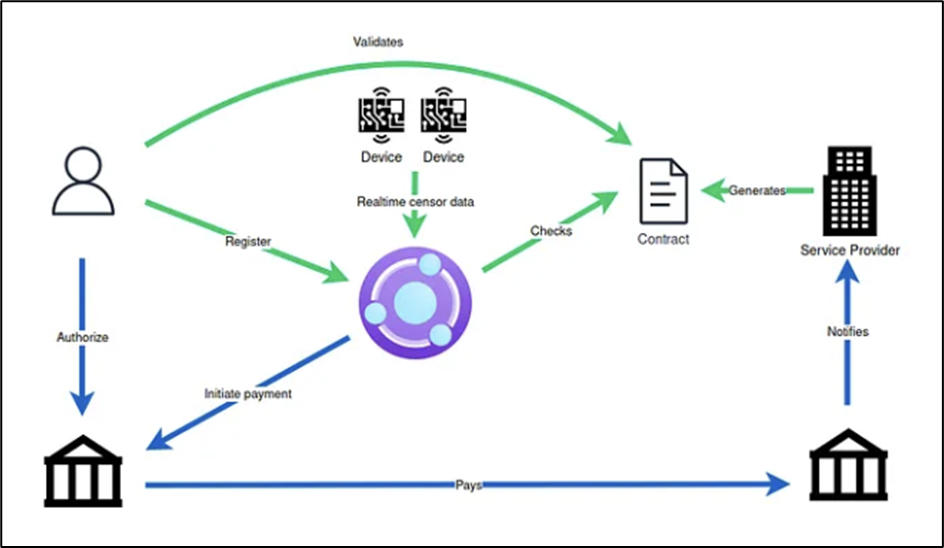
4.3 API- powered Sustainability Insights
With the integration of API-powered sustainability insights, the dream of making Eco-Link a reality comes one step closer.
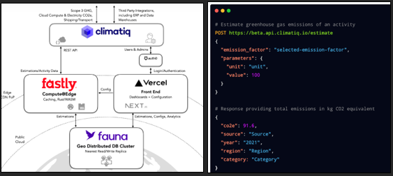
Figure 12 above showcases a holistic infrastructure of Climatiq, demonstrating an integration of several components. This interplay of technologies underscores the potential for comprehensive data gathering, analysis, and insight generation. As illustrated, Climatiq seamlessly interacts with third-party systems, including ERP and data warehouses. This allows for the automated gathering of vast data necessary for accurate carbon emissions calculations, making it apt for Eco-Link to obtain holistic insights.
Central to Climatiq’s model is its REST API, which facilitates smooth communication between different components (Climatiq, 2023). The REST API could empower Eco-Link by allowing different eco-conscious modules or services to interact efficiently, sharing data and insights in real-time. To establish trust and security, Climatiq employs auth0 for user and admin authentication. A secure login mechanism not only ensures data integrity but also instills confidence in users. By adopting a similar authentication approach, Eco-Link can ensure its user data remains uncompromised.
By using Vercel and NEXT.Js, Climatiq maintains visually appealing front-end and robust functionalities. For Eco-Link, this means users can have interactive dashboards, real-time configurations, and insights presented in an easily digestible manner, fostering informed eco-decisions. Finally, to facilitate real-time estimations and analytics, Fastly’s Compute@Edge offers caching and real-time estimations, which, when combined with fauna’s Geo Distributed DB Cluster, ensures data is retrieved from the nearest available source. This minimizes latency, provides faster response times, and, importantly, reduces emissions from distant server retrievals. Such capabilities would be invaluable to Eco-Link, allowing it to provide users with instantaneous insights and recommendations based on real-time data.
4.4 Tokenization and Digitizing Credentials
Payment networks such as Visa and Mastercard play a pivotal role in advancing IoT payments. They have been instrumental in building the framework to promote token availability and interoperability across IoT devices. This involves developing and maintaining the necessary technology for IoT commerce, especially in tokenization and digitizing credentials (Visa, 2023).
These networks also offer scalable frameworks for issuers and IoT device manufacturers, with initiatives like Visa’s Visa Token Service(VTS). They collaborate with a variety of stakeholders, from car manufacturers to wearables brands, extending the payment value chain.
The below diagram illustrates Visa’s token provisioning and activation occurs. This is a One-Time action per payment credential.
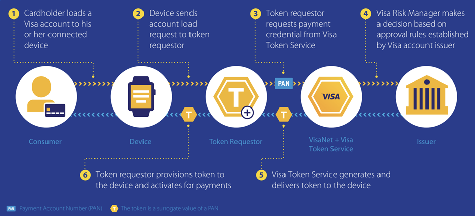
The token provisioning and activation process, as depicted in the diagram (Figure 13), is an integral part of Visa’s approach to fortifying IoT payments. This procedure starts when a cardholder loads their Visa account details onto a connected device. Once loaded, the device sends a request to provision the account to a token requestor, acting as an intermediary (Eco-Link). The token requestor, in turn, fetches the necessary credentials from the Visa Token Service. Crucially, instead of transmitting the actual Payment Account Number (PAN), the system replaces it with a digital token—a surrogate value. This ensures the actual payment details remain shielded.
The Visa Risk Manager evaluates the provisioning request, making decisions based on established approval rules set by the Visa account issuer. Once the token is greenlit, it is then provisioned to the device and activated for payments. The strength of this system lies in its ability to protect sensitive payment information. Even if there’s an unauthorized breach, the exposed token is rendered valueless to cybercriminals, as it does not carry the actual card details.
In essence, Visa’s tokenization system is a multi-step, highly secure approach that leverages advanced technology to ensure both convenience and safety in the expanding realm of IoT payments.
5. Risk / Security Features
As financial systems link up with IoT devices, the expanded network of interconnected systems becomes a potential target for cyber threats (Mastercard, 2021). These are the primary security issues associated with this integration:
1. Device Security Limitations:
IoT devices, due to their limited processing capacity and memory, face challenges in adopting advanced security measures. Battery-operated devices pose added challenges, especially when it comes to remote security updates, given the necessity to conserve energy.
2. Data Privacy and Potential Breaches:
IoT devices generate substantial personal data making them attractive to cyber attackers. The inherent vulnerabilities of these devices further increase the risk of data compromise.
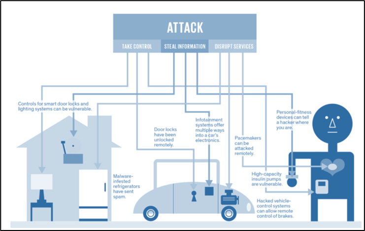
3. Vulnerability to DDoS Attacks:
Several IoT devices lack sufficient protection against Distributed Denial of Service attacks. Pre-set factory settings amplify the risk of unauthorized remote access. Additionally, the low user interaction with IoT devices can lead to under-detection of such breaches.
Given the above challenges, the following security considerations become essential for IoT payments:
· Authenticated Payments:
Many IoT applications are designed for payments to occur autonomously, without human intervention. Such operations underscore the importance of robust authentication mechanisms. When a car autonomously pays for parking or a refrigerator procures groceries, the underlying technology should ensure the transactions are authentic and authorized.
· Identifying Devices in Transactions:
Payments involve not just the transfer between accounts but also between entities, with one party often being an IoT device. This necessitates a system where devices maintain distinct and verifiable identities to secure the data they transfer.
· Managing Payment Discrepancies:
In instances of transactional errors or disputes, it is vital to determine liability. Strong device authentication combined with user authorization measures are key in ensuring the legitimacy and accountability of transactions.
6. Solution Stakeholders
We have categorised solution stakeholders into three categories: IoT Payment Integrators, Rewards Partners, and Regulators.
6.1 Eco-Link (IoT Payment Integrator and Eco-Reward Platform)
To contextualise, Eco-Link serves as the central hub, seamlessly integrating payments through IoT devices while promoting and rewarding sustainable behaviours. As the backbone, it collaborates with various stakeholders to provide a comprehensive, eco-conscious payment experience. For Eco-Link to be successful, it would also have to work with other IoT payment integrators such as Mastercard and Visa, which play an important role in facilitating seamless transactions over the Eco-Link platform. At the same time, IoT device manufacturers which produce items such as smart phones, watches, cars, smart home gadgets etc, will also play an important role in making their eco-systems ‘connectable’.
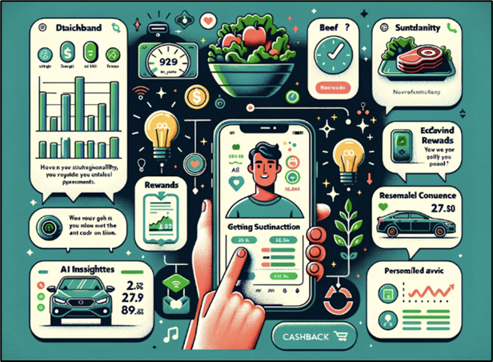
6.2 Rewards Partners
These partners motivate customers towards sustainable behaviours through financial incentives on the Eco-Link platform.
Merchants: Collaborating with Eco-Link, businesses offer rewards or discounts to users paying via the platform. For example, a salad shop might provide a discount to Eco-Link users, as salads typically have a smaller carbon footprint than meat-based meals.
Banks: Responding to demands from both shareholders and customers for clear sustainability goals, banks enable account integration with Eco-Link and introduce innovative financial products tied to sustainability. Banks might provide special saving accounts with added benefits for eco-conscious users. Furthermore, banks might use Eco-Link to share insights or educational content on green investments.
Credit Card Companies: Recognizing the growing consumer awareness of sustainability, these companies can offer green credit cards that reward sustainable purchases (DBS, 2021). It is important to note that while Visa & Mastercard provide technical solutions, such as carbon footprint calculators, the actual rewards are decided and disbursed by the issuing banks themselves.
Other Financial Service Providers: Insurance companies, for example, can adjust premium rates based on factors like eco-friendly driving habits (melita.io, 2023). Meanwhile, investment firms might highlight green portfolios, letting users invest in an environmentally friendly future.
6.3 Regulators
This group ensures the ethical and legal operations of the Eco-Link platform.
Financial Regulatory Authorities: Regulators ensure Eco-Link aligns with financial regulations, bolstering the platform’s credibility.
Data Protection and Privacy Commissions: These bodies manage and advise on user data usage and protection, setting standards for data storage and protection to ensure Eco-Link maintains high user data confidentiality and integrity.
Environmental and Sustainability Boards: These entities verify Eco-Link’s eco-friendly commitments. They also present feedback, guidance, and validation for the platform’s sustainability initiatives. An example partner could be National Environment Agency (NEA), which plays a pivotal role in ensuring a clean and sustainable environment for Singapore (NEA, 2022).
7. Solution Resources
Solution resources for each technological component will be explained in the following sections.
IoT Integration and Financial Data Synthesis
We would require a team of specialized IoT engineers adept at handling platforms like AWS IoT Core, Google Cloud IoT, and Microsoft Azure IoT Hub. This is to ensure scalability and accommodate a growing number of devices without compromising on performance and maintaining strong security measures. Alongside, data scientists and database administrators are crucial to harness, analyse, and securely store the vast data streams generated. They will transform raw data into useful insights. These insights can lead to the development of new features which would enhance user experience. Expertise in cloud storage solutions and financial data analytics tools would also be paramount to ensure the efficient synthesis of collected data.
AI-driven Financial Advisory and Secure Transaction Ecosystem
A team of AI and machine learning specialists would be at the heart of development, bringing proficiency in platforms like TensorFlow, PyTorch, and scikit-learn. This ensures that the advice is not derived from historical data but also anticipates future financial trends. It would give users a proactive approach to their finances. Blockchain developers familiar with Ethereum and Binance Smart Chain would be essential for crafting a secure transaction environment (Reddy, Hamshika, Aishwarya, & Ashritha, 2022). Moreover, cybersecurity experts, well-versed in tools like Norton IoT Security and TrendMicro, would ensure the robustness and security of our entire ecosystem.
API-Powered Sustainability Insights
Partnering with the RESTful API platform by Climatiq for greenhouse gas emissions estimations requires a strategic approach to resource allocation. At the forefront, there is a need for API integration specialists and backend developers to facilitate seamless interfacing and manage POST requests. With the platform handling sensitive data, including bank statements and payment terminals, data security experts are essential for safeguarding interactions and system integrity. Database managers will handle the platform’s extensive emissions database, ensuring smooth data operations. UI/UX designers and frontend developers will translate CO2 insights into user-friendly interfaces. Additionally, leveraging the integrated MCC (Merchant Category Code) mapping demands experts in transaction categorization for precise carbon estimations. Finally, data scientists and analysts will be instrumental in converting raw data into actionable insights, supported by infrastructure specialists overseeing the platform’s scalable architecture.
8. Solution Steps
Step 1. Needs Assessment and Prototype Development:
Begin by comprehensively understanding user preferences, pain points, and challenges. Leveraging this foundational knowledge, design a preliminary, testable version of Eco-Link, ensuring the prototype embodies the primary vision and essential functionalities.
Step 2. Stakeholder Engagement and Partnerships:
Financial Collaborations. Engage directly with financial institutions, credit card companies, and insurance providers. Negotiate beneficial agreements that synchronize user rewards with their financial and sustainability objectives.
Road Shows for Larger Stakeholders. Organize strategic roadshows targeting major corporations and government entities. Present Eco-Link’s capabilities, emphasizing its potential to aid them in achieving their ambitious sustainability targets. By marketing the platform’s dual advantage of financial integration and sustainability metrics, appeal to their larger environmental goals and responsibilities.
Step 3. Regulatory Compliance and Technology Development:
Prioritize strict compliance with data privacy regulations and the benchmarks set by the financial industry. In parallel, bolster the platform’s defences with state-of-the-art security measures. Develop the technological foundation of Eco-Link, focusing on a robust web and mobile platform infrastructure. This should include seamless data integration and an intuitive user interface. Elevate user engagement with straightforward navigation and innovative data visualization tools.
Step 4. Pilot Phase and Feedback Integration: Introduce Eco-Link to a handpicked audience for preliminary testing. Use the feedback from this phase to make iterative enhancements, ensuring that the platform continually aligns with user experience demands and sustainability goals.
Step 5. Full Launch and Continuous Updates: With the platform refined based on real-world insights, proceed to a wider launch of Eco-Link. Beyond the launch, commit to dynamic updates and innovations, aligning with ever-evolving technological advancements, shifting sustainability landscapes, and invaluable user feedback.
9. Solution Benefits
Eco-Link offers multifaceted advantages that cater to a broad spectrum of stakeholders. Let’s follow Imran’s journey to understand the tangible benefits experienced by end users, financial institutions, and service providers.
9.1 Imran’s Journey with Eco-Link
Imran, a tech-savvy 29-year-old, relies heavily on digital solutions for his daily needs, especially financial transactions. As a car owner, he is also conscious about reducing his environmental impact. Here is how Imran’s journey unfolds with Eco-Link:
Onboarding and Daily Usage:
· Discovering Eco-Link’s promise of rewarding sustainable behaviour, Imran sets up his profile, linking his bank accounts, credit cards, and integrates his smart car system for NFC payments (Visa, 2023).
· He adopts the Eco-Link mobile wallet, making it his primary payment mode for daily transactions.
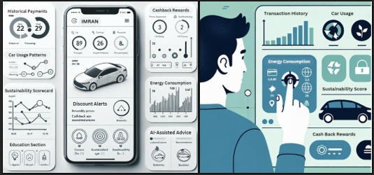
Value Proposition:
Imran’s Eco-Link dashboard showcases his transaction history and car usage. He can track his sustainability score – he is happy to note that opting for a salad instead of beef increased his points.
The platform calculates his carbon footprint, derived from all his energy bills, fuel consumption, and other purchases on a real time basis.
Imran is rewarded with cashback for sustainable purchases and even receives AI-driven suggestions to further eco-friendly choices and save money.
End Users:
For end users like Imran, Eco-Link is not just a payment platform; it serves as a comprehensive eco-conscious lifestyle guide. Users gain real-time insights into their micro-transactions, allowing transparency in consumption patterns and carbon footprints. The platform aggregates all financial transactions, reducing the need to juggle multiple apps. The built-in carbon footprint tracker, coupled with rewards for eco-friendly purchases, motivates users towards an environmentally responsible lifestyle. Moreover, AI-driven insights based on past data nudge users towards lower emission choices, ensuring a holistic and rewarding experience.
9.2 Financial Institutions and Service Providers / Retail Partners
Financial Institutions:
For financial institutions, Eco-Link provides access to a growing segment of eco-conscious consumers. By integrating their data, they not only endorse a green initiative but also strengthen customer relationships. This association promotes their image as an environmentally responsible entity and expands their consumer base seeking sustainable expense management.
Service Providers / Retail Partners:
Retailers partnering with Eco-Link can spotlight their eco-friendly products, leveraging the platform to drive demand. They can also dispense rewards and discounts to eco-conscious consumers, amplifying their sustainability initiatives. This partnership enhances their customer base and boosts their green branding efforts.
In essence, Eco-Link’s ecosystem weaves a win-win situation for all stakeholders, driving both environmental consciousness and economic growth.
10. Future Outlook
Global trends emphasize eco-conscious living, ensuring that an integrated solution like Eco-Link will garner immense popularity. With that, Eco-Link presents limitless future possibilities and there are various ways to expand on this solution. These are some of the possible areas that our solution, Eco-Link can pivot to enhance the user experiences and eventually meet the ever-increasing payment needs of the consumers.
Enrichment of User Experience
The platform can scale up to include more enriching content to serve our customers. Analytical insights can be applied to the users’ data to present tailored blogs and tutorials. For example, if Eco-Link picks up on user’s constant payments to ride hailing services, the platform can bring up articles and blogs related to carbon emission from private transportation and other environmental implications which can then urge and remind users to take up a more eco-conscious commute. In addition, the platform can push out facts and posts on the environmental initiatives happening in Singapore. Users are then well-informed deepening their intents for sustainable finance.
Peer to Peer Interactive Elements
Eco-Link can be gamified by tabulating the energy scores and presenting them in a publicly visible score dashboard. This Peer-to-Peer feature can allow the platform users to share their sustainability scores to the rest of the application users promoting the ongoing environmental efforts and healthy competition amidst the users. The top performers could be incentivised further to continue with their sustainable payment efforts.
Integration of other IoT Devices
In the long run, partnerships with other IoT providers can be forged. Through this, consumers can elect to connect their IoT devices to our platform and utilize the platform to make payments and track their finances sustainably (PYMNTS, 2022).
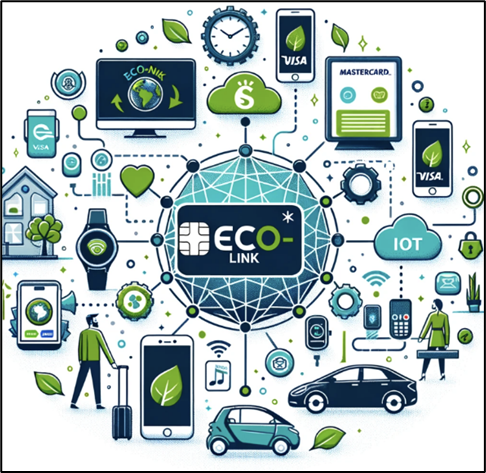
Eco-Link could maintain an open API to share data across other IoT ecosystems such as Google Home or Amazon Alexa. By integrating these devices, users can get notifications on the energy consumption within their homes, and we could even provide more services such as recurring payment plans. For instance, if a person links their smart home devices to Eco-Link’s system, they can track their energy consumption together with their other finances and associated energy consumptions. This way they can get a fuller picture of their energy trends and along the pipeline, payment arrangements can be made via Eco-Link. Users can use the Eco-Link’s digital wallet to trigger monthly payments to utility companies for their household energy consumption. Eco-Link could expand by forming these future partnerships with other IoT vendors (e.g. smart appliances/ gadgets) which is a win-win situation for both consumers and partners. Eco-Link can serve as the intermediary between these two groups where vendors can promote their services (e.g. easy statement retrievals, auto payments through Eco-Link). Meanwhile, users can continue to track their finance and their carbon emissions sustainably for the various services used by them.
As such, Eco-Link can become an indispensable tool in modern, sustainable living.
References
Capture. (1 November, 2023). The Capture App. Retrieved from Capture: https://www.thecapture.club/
Climatiq. (1 November, 2023). Build carbon intelligence into your software. Retrieved from Climatiq: https://www.climatiq.io/
Climatiq. (1 November, 2023). Calculate Carbon Emissions for Payments and Transactions. Retrieved from Climatiq: https://www.climatiq.io/payments-transactions-carbon-emissions
Cointelegraph. (29 December, 2021). Introducing the Trivergence: Transformation driven by blockchain, AI and the IoT. Retrieved from Magazine by Cointelegraph: https://cointelegraph.com/magazine/introducing-trivergence-transformation-blockchain-ai-iot/
DBS. (15 April, 2021). DBS intensified green push with nation’s first eco-friendly card. Retrieved from DBS: https://www.dbs.com/newsroom/DBS_intensifies_green_push_with_nations_first_eco_friendly_card
DBS. (1 November, 2023). DBS LiveBetter - Just one tap to take sustainable actions to track, offset, give and invest in a greener future. Retrieved from DBS: https://www.dbs.com.sg/personal/livebetter
Hasan, M. (16 February, 2022). The IoT cloud: Microsoft Azure vs. AWS vs. Google Cloud. Retrieved from IOT Analytics: https://iot-analytics.com/iot-cloud/
Lumenci. (20 March, 2022). Smart Payments: The Future of Transaction. Retrieved from Lumenci: https://www.lumenci.com/post/smart-payments
Mastercard. (2021). How IoT will Shape the Future of Payments. Japan: Mastercard.
melita.io. (8 May, 2023). IoT Technology Leads to Lower Car Insurance Premiums and Safer Roads. Retrieved from IoT For All: https://www.iotforall.com/iot-technology-leads-to-lower-car-insurance-premiums-and-safer-roads
Melki, A. (19 July, 2023). Autonomous Payments in Action: How IoT Payments Are Revolutionizing the Way We Transact. Retrieved from Medium: https://medium.com/@alimelki/autonomous-payments-in-action-how-iot-payments-are-revolutionizing-the-way-we-transact-9630c099b80d
NEA. (2022). Sustainable and Resource Efficient Singapore. Retrieved from National Environment Agency: https://www.nea.gov.sg/integrated-sustainability-report-2021-2022/review-of-fy2021/ensuring-a-clean-and-sustainable-environment-for-singapore/sustainable-and-resource-efficient-singapore
NoCash. (10 November, 2021). Visa announces the “Visa Eco Benefits”. Retrieved from NoCash: https://nocash.ro/visa-announces-the-visa-eco-benefits/
PYMNTS. (30 August, 2022). Carbon Trackers, the Next Big Thing in European Banking Apps. Retrieved from PYMNTS: https://www.pymnts.com/news/digital-banking/2022/carbon-trackers-the-next-big-thing-in-european-banking-apps/
Reddy, S., Hamshika, S., Aishwarya, S., & Ashritha, V. (2022). Block Chain for Financial Application using IOT. Turkish Journal of Computer and Mathematics Education, 844 - 853.
Software. (1 November, 2023). Machine Learning (ML) for IoT. Retrieved from Software: https://www.softwareag.com/en_corporate/resources/iot/article/machine-learning.html
Statista . (9 August, 2023). Number of users of digital payments in Singapore from 2018 to 2027, by segment. Retrieved from Statista: https://www.statista.com/forecasts/1304594/digital-payment-users-by-segment-singapore
Tableau. (1 November, 2023). MoneySQ makes timely and effective decisions in fast-paced FinTech industry. Retrieved from Tableau: https://www.tableau.com/solutions/customer/moneysq-makes-timely-and-effective-decisions-in-fast-paced-fintech-industry
Visa. (February, 2017). Visa and IBM: Changing the World of Payments by Turning Things into Potential Points of Sale. Retrieved from Visa Developer Center: https://community.developer.visa.com/t5/Blogs/Visa-and-IBM-Changing-the-World-of-Payments-by-Turning-Things/ba-p/6076
Visa. (9 November, 2021). Visa Announces the “Visa Eco Benefits” Sustainability Bundle to Empower Issuers to Meet Climate- Conscious Consumer Demand. Retrieved from Visa: https://www.visa.co.uk/about-visa/newsroom/press-releases.3142789.html
Visa. (1 November, 2023). Leading the token transformation. Retrieved from Visa: https://usa.visa.com/partner-with-us/payment-technology/visa-tokenization.html
Visa. (1 November, 2023). Secure Payments in the Connected Car. Retrieved from Visa: https://usa.visa.com/visa-everywhere/innovation/connected-commerce/connected-car.html
Wenzel, W. (15 May, 2023). Achieving low latencies and low emissions at the edge for Climatiq’s carbon calculation API. Retrieved from Fauna: https://fauna.com/blog/low-latencies-and-emissions-at-the-edge-for-climatiqs-carbon-calculation-api
WWF-Singapore and Accenture. (2021). Sustainability in Singapore - Consumer and business Opportunities. Retrieved from https://wwfasia.awsassets.panda.org/downloads/sustainability_in_singapore_wwf_accenture.pdf